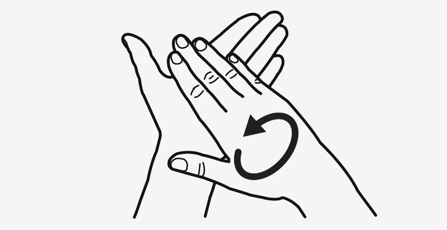
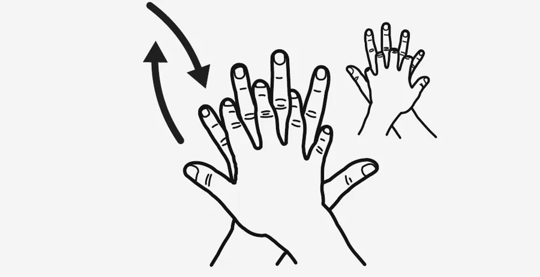
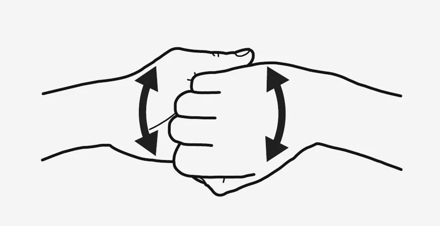
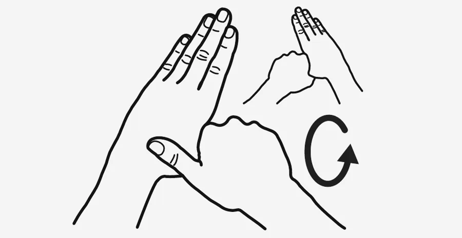
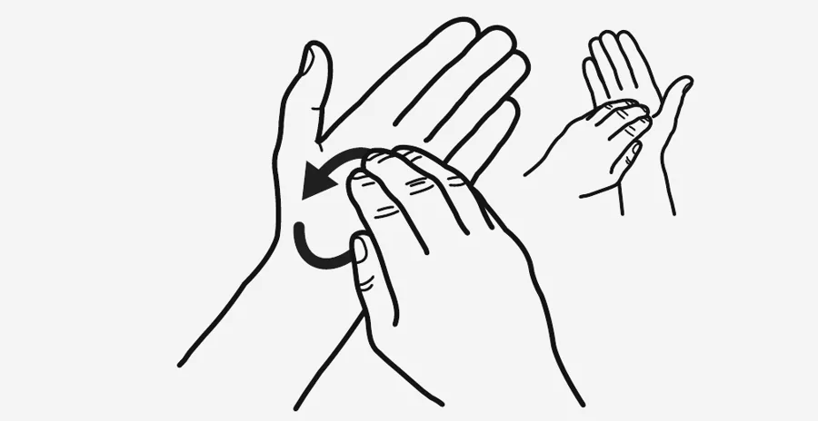

Edukasi pasien
Hal-hal sederhana untuk mencegah infeksi selama di rumah sakit, dan yang perlu disiapkan sebelum pasien pulang.
Bersihkan tangan sebelum dan sesudah menyentuh pasien.
Sedang batuk atau pilek? Pakai masker atau tunda kunjungan.
Buang sampah sesuai warna kantongnya.
Kapan harus membersihkan tangan
Tangan adalah jalan utama perpindahan kuman di rumah sakit. Bersihkan tangan pada saat-saat berikut:
- Sebelum menyentuh pasien
- Sesudah menyentuh pasien
- Sesudah menyentuh barang di sekitar pasien, seperti tempat tidur, meja, dan pagar tempat tidur
- Sebelum makan atau menyuapi pasien
- Sesudah dari kamar mandi atau terkena cairan tubuh
Enam langkah mencuci tangan
Pakai cairan pembersih tangan (hand rub) selama 20–30 detik, atau sabun dan air mengalir selama 40–60 detik. Bila tangan tampak kotor, gunakan sabun dan air.






Ilustrasi: World Health Organization (WHO), poster How to Handwash?, 2009. Langkah mengikuti pedoman kebersihan tangan WHO.
Untuk pasien dan pengunjung
Etika batuk dan bersin
Tutup mulut dan hidung dengan tisu atau lengan atas bagian dalam. Buang tisu ke tempat sampah, lalu bersihkan tangan. Pakai masker bila sedang batuk.
Tunda kunjungan saat sakit
Pengunjung yang sedang demam, batuk, atau pilek sebaiknya tidak menjenguk agar tidak menularkan penyakit kepada pasien.
Jangan duduk di tempat tidur pasien
Gunakan kursi yang tersedia. Tempat tidur pasien harus tetap bersih.
Jangan menyentuh alat medis
Infus, selang, dan alat medis lain hanya ditangani petugas. Bila ada yang tampak bermasalah, panggil perawat.
Buang sampah sesuai warna kantong
Kantong kuning untuk sampah infeksius, kantong hitam untuk sampah biasa. Lihat rinciannya.
Jaga kebersihan kamar
Rapikan barang bawaan dan jaga kebersihan kamar mandi, sesuai tata tertib ruangan.
Memilah sampah
Sesuai label tempat sampah dari Instalasi Kesehatan Lingkungan dan Limbah RSUD AWS.
Kantong kuning
Limbah infeksius
- Kasa, kapas, tisu, perban, dan plester bekas yang terkena darah atau cairan tubuh
- Sarung tangan dan masker bekas
- Pembalut dan popok bayi atau dewasa
- Selang kateter, NGT, infus, dan kantong darah
- Botol infus yang terkena darah atau cairan tubuh, dan botol injeksi bekas
- Sprei, selimut, atau kain yang terkena darah
Kantong hitam
Limbah domestik (anorganik)
- Botol plastik bekas minuman
- Kaleng dan botol kaca
- Kantong plastik dan sendok plastik
- Kemasan makanan styrofoam
- Bungkus nasi dan mi instan
- Kertas bekas dan kardus
Sebelum pasien pulang
Perawat akan menjelaskan hal-hal berikut. Pastikan keluarga yang akan merawat di rumah ikut mendengarkan, dan tanyakan bila ada yang belum jelas.
Obat
Nama obat, dosis, jam minum, lama pemakaian, dan efek samping yang perlu diwaspadai. Minum obat sesuai petunjuk dan jangan berhenti sendiri.
Jadwal kontrol
Tanggal, poliklinik, dan dokter yang dituju. Bawa surat kontrol dan kartu berobat saat datang.
Dokumen
Ringkasan pulang (resume medis), resep, surat kontrol, dan hasil pemeriksaan. Simpan di satu map.
Makan dan aktivitas
Ikuti anjuran diet dan batasan aktivitas dari dokter atau ahli gizi. Tanyakan kapan boleh kembali bekerja atau mandi biasa.
Perawatan di rumah
Bila ada luka operasi atau alat yang terpasang, minta perawat menunjukkan cara merawatnya.
Kapan harus kembali
Ada tanda bahaya? Segera ke IGD tanpa menunggu jadwal kontrol.
Tanda bahaya: segera ke IGD
- Demam tinggi yang tidak turun
- Sesak napas atau nyeri dada
- Perdarahan yang tidak berhenti
- Luka operasi merah, bengkak, bernanah, atau terbuka
- Muntah terus-menerus, tidak bisa makan atau minum
- Lemas sekali, bingung, atau sulit dibangunkan
Materi ini disusun dari pedoman kebersihan tangan WHO, pencegahan infeksi di fasilitas kesehatan, dan edukasi pasien pulang yang umum diberikan di rumah sakit. Materi dapat diganti atau dilengkapi dengan materi Tim PPI (Pencegahan dan Pengendalian Infeksi) RSUD AWS.